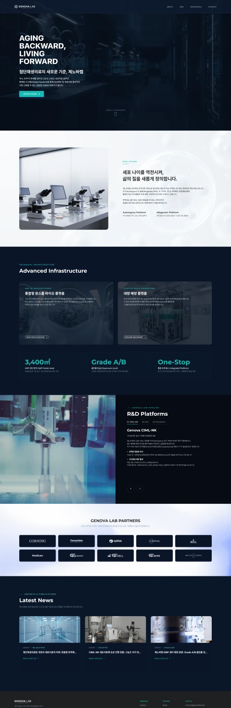
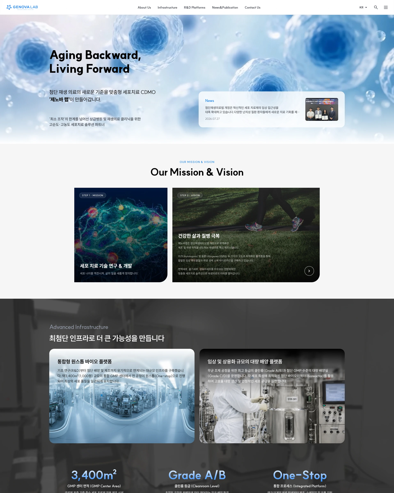
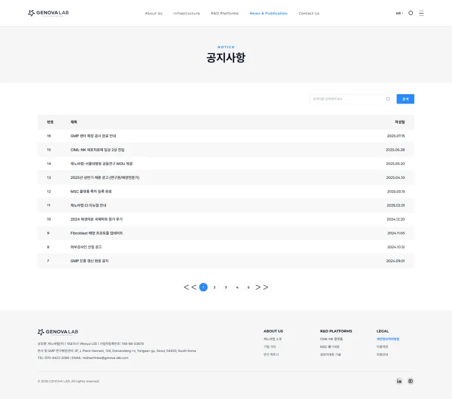
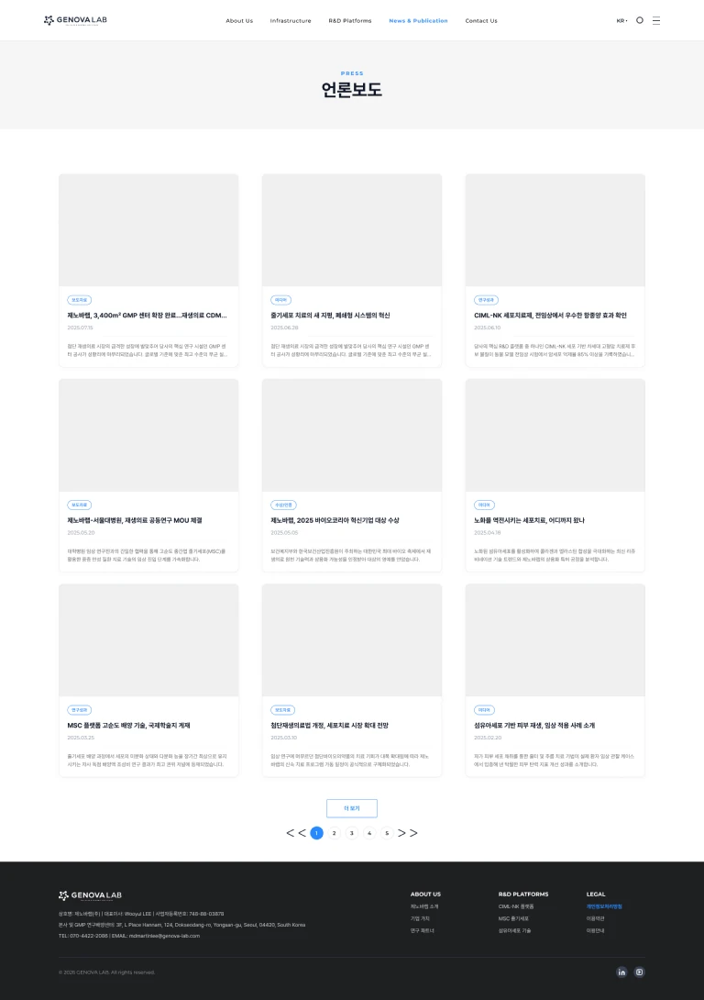

2026.09
GENOVA LAB
세포 배양 연구소 제노바랩 홈페이지 디자인

- CLIENT
- 제노바랩 (GENOVA LAB)
- PERIOD
- 2026.09 (약 2주)
- ROLE
- 기획 보완 · 디자인 100%
- SCOPE
- 메인 + 서브페이지 3종 (공지사항 · 언론보도 · 문의하기)
- TOOLS
- Figma · AI 툴
- STATUS
- 최종 디자인 확정 클라이언트 일정 보류로 퍼블리싱 전 종료
SUMMARY
글뿐인 기획안을
연구소의 얼굴로
이레세포 홈페이지에 이어 같은 클라이언트에게 맡은, 세포 배양 연구소 제노바랩의 홈페이지 디자인 프로젝트입니다. 클라이언트 기획안에는 섹션 순서와 키워드만 있고 본문은 자리 표시로 비어 있었습니다. 업체가 제공한 자료에서 핵심 내용을 골라 섹션을 구성하고, 마케팅팀과 함께 바이오·제약 기업 사이트를 참고해 부족한 구조를 보완했습니다.
원페이지에서 서브페이지 구조로 바뀌는 과정에서 정보를 다시 나누고, 피드백을 반영해 진행했습니다.
KEY POINTS
기획안에서 최종까지
핵심 내용 선별
업체 제공 자료에서 3,400㎡ · Grade A/B · One-Stop을 핵심으로 골라 Advanced Infrastructure 섹션으로 구성했습니다.
원페이지 → 서브페이지
처음엔 원페이지에 팝업으로 많은 정보를 담았다가, 서브페이지 제작이 결정되며 메인의 정보를 덜어내고 다시 나눴습니다.
서브페이지 3종
클라이언트 요청에 맞춰 공지사항 · 언론보도 · 문의하기 페이지를 추가했습니다.
피드백 반영
Mission과 Vision을 시각적으로 분리하고, 제품 탭을 3종에서 4종(EXOSOME 추가)으로 바꿨습니다.
STRUCTURE
섹션 구성의 변화
블루는 직접 제안한 섹션, 회색 태그는 요청을 반영한 섹션입니다.
기획안 (원페이지)
- 01메인 영상
- 02Science — Immune · Stem · NK Cell
- 03공식 자문의 소개
- 04연구 수치
- 05연구 이미지 (본문 미정)
- 06파트너
- 07연구소 이미지
최종 (메인 + 서브페이지)
- 01Hero — Aging Backward, Living Forward
- 02Our Mission & Vision피드백
- 03Advanced Infrastructure핵심 내용 선별
- 04Product — 4종 탭피드백
- 05Partners
- 06News & Publication마케팅팀 요청
- 07Contact마케팅팀 요청
PROCESS
디자인 방향 탐색
기획안을 그대로 옮긴 초기 버전에서 시작해 두 가지 톤을 비교하고, 밝은 블루 세포 비주얼로 확정했습니다.




FINAL
최종 디자인

서브페이지



RESULT
결과
키워드 중심의 원페이지 기획안을 메인과 서브페이지 3종으로 구체화하고, 클라이언트 피드백을 반영해 최종 디자인을 확정했습니다. 이후 클라이언트 측 일정 보류로 퍼블리싱 전 단계에서 종료되었습니다.